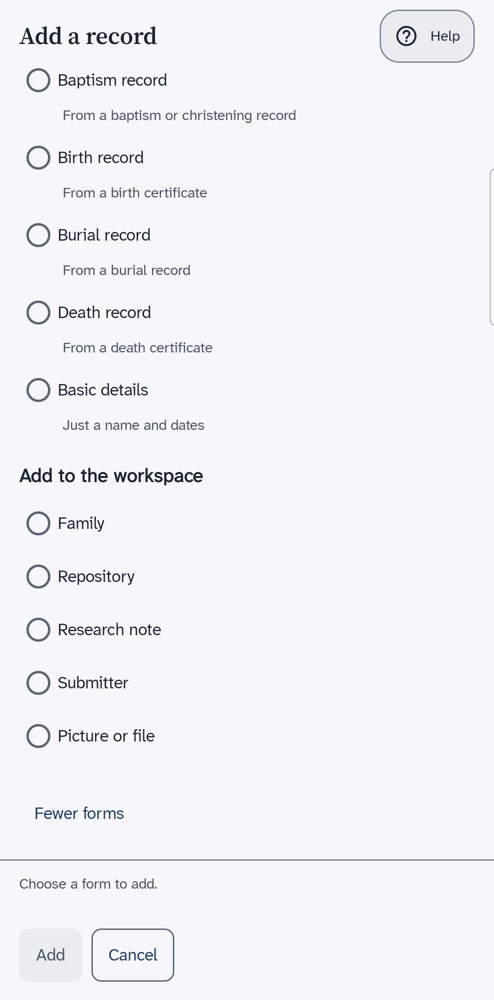

Forms for records you have seen
The forms on the Add a record sheet that match a census, a register or a certificate, and what each one asks for.
What the forms are for
The sheet named Add a record has plain forms and forms that match a real record. A plain form, such as Basic details, asks for a name and dates. A form that matches a record asks the questions that the record answers. Use it only for a record you have seen, because some of its boxes ask for the record's own words.
Choose More forms at the foot of the sheet to see the rest. The number in brackets says how many there are. A line under a form says when it does not fit. For example, a census form can say that nobody in the tree was alive then.

The census forms
There are forms for the censuses of England and Wales, starting with 1841, and one for the 1939 register. A census form says Adding to the household of
a person, and you can change whose household it is. The census date is filled in for you.
| Part of the form | What you enter |
|---|---|
| The record | The date, the place, and the title of the source. |
| Where it is kept | The place that keeps the record. Then the class, the piece, the folio and the page, with the schedule number. |
| The district | The registration district, the sub-district and the enumeration district. |
| Household members | A row for each person in the household. The form lists the family, and leaves out people who had died by the census date. |
The other forms
- Baptism record, Birth record, Burial record and Death record make a new person from a record. The baptism and burial forms also show under the part of the sheet that adds an event to the person you have open.
- Marriage register entry adds a marriage from a register.
- Family note adds a note to a family.